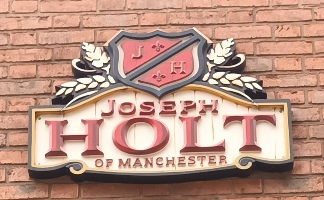

Sir Edward Holt
Sir Edward Holt took over running of the Joseph Holt Brewery in 1882. He created Joseph Holt Ltd in 1922, Was elected as LordMayor of Manchester and led the scheme to bring fresh water to Manchester.
Founder of the Brewery and Establishment of the Holt Line
Joseph Holt stands as the originating figure of the Manchester brewing family. Beginning in 1849 with a modest
rented brewhouse behind a public house on Oak Street, he laid the foundations of what would become a long‑standing
regional brewery. His early years were marked by steady expansion: first to the Ducie Bridge Brewery in 1855, and then,
in 1860, to the Derby Street site that remains the centre of operations.
Holt’s tenure was characterised by practical growth rather than grand gestures. He introduced porter
alongside ale, secured reliable tied outlets, and gradually acquired more than twenty public houses, beginning
with the Wellington Hotel in Eccles in 1861. His wife Catherine played a decisive role in financing and
stabilising the enterprise, and their partnership underpinned the brewery’s early resilience.
By the time of his death in 1886, Joseph had established a secure and well‑regarded concern, passing to his son
Edward a business already rooted in Manchester’s commercial life.

Consolidator and Moderniser with Civic and Philanthropic Influence
Born in the same year his father founded the brewery, Edward Holt entered the business in 1875 and succeeded to full
control in 1882. His stewardship marked a decisive period of expansion and modernisation. Between 1886 and 1900
he oversaw the purchase of more than sixty tied houses, absorbed two neighbouring breweries, and increased production
from roughly sixteen thousand barrels to over forty thousand annually. The workforce grew accordingly,
transforming the firm from a small family operation into a substantial Manchester brewery.
Edward’s public life was equally significant. Elected to Manchester City Council in 1890, he chaired the
Waterworks Committee and was instrumental in advancing the Haweswater Scheme, securing a long‑term water
supply for the city. His civic service was recognised with the Freedom of the City (1916), a baronetcy (1916),
and the CBE (1920). He served twice as Lord Mayor.
His philanthropic legacy is most visible in the establishment of the Christie Hospital and the Holt Radium
Institute, where he was a leading figure in early cancer‑treatment initiatives and a major contributor to
the Manchester and District Radium Fund.
Sir Edward died in 1928, having shaped both the brewery and the civic landscape of Manchester far beyond the
scope of his father’s original enterprise.
Joseph Holt trailblazer 1
Sir Edward Holt trailblazer 2